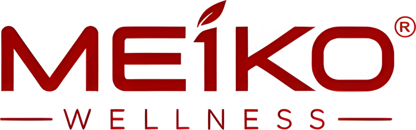
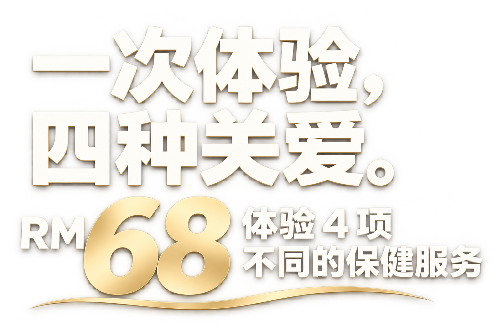
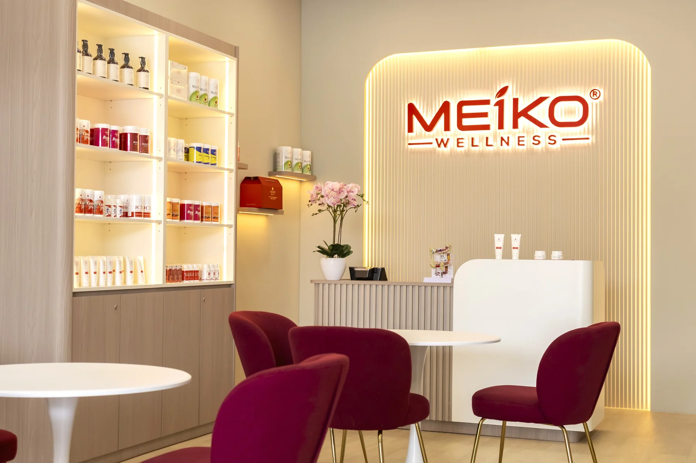
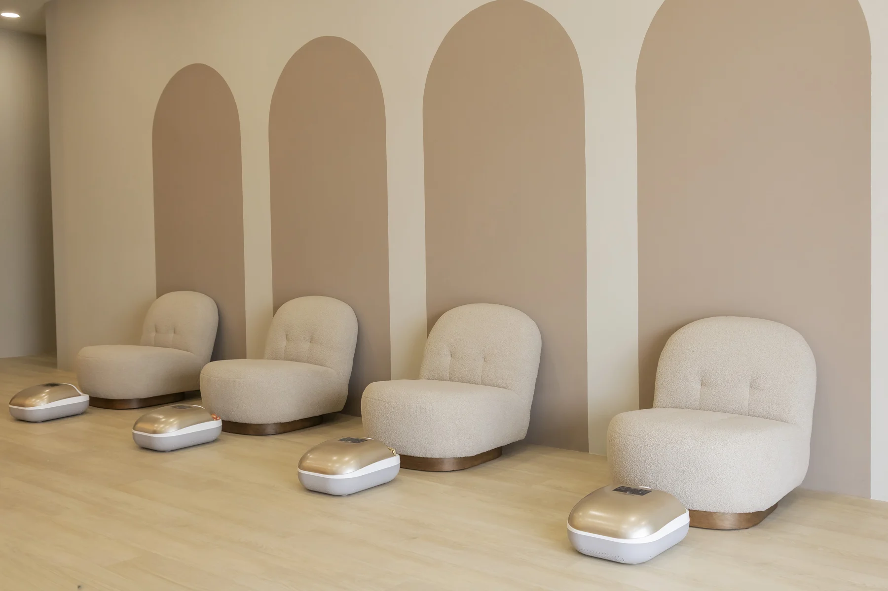
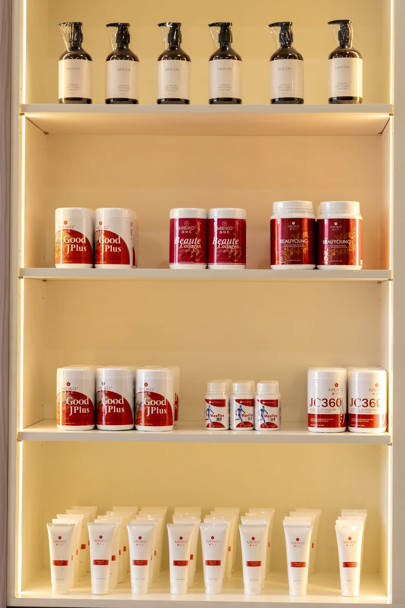
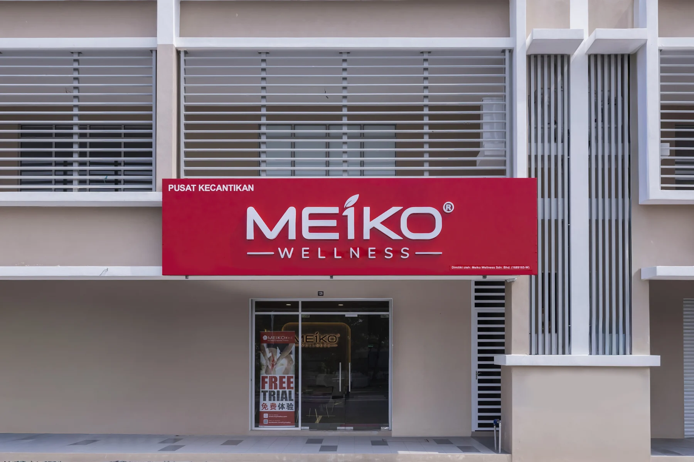

WhatsApp 预约时间
告诉我们您想预约 RM68 四项保健体验，由门店人员与您确认到访安排。

MEIKO WELLNESS · 初次养生体验

足部养生 · 艾灸椅 · 盆骨椅 · 太空舱
让身体慢下来，把关爱留给自己。

WARM
RELAX
RESTORE
UNWIND
用心关照身体，
让每一天更有活力。


FROM MEIKO TO MEIKO WELLNESS
品牌的用心，一直都在。养生的体验，由此展开。
MEIKO 从 2007 年的首家门市出发，逐步累积门店服务经验。如今，这份对顾客的关爱延伸至 MEIKO Wellness：以现代养生科技、舒适空间与贴心指导，让养生走进日常。
MEIKO Wellness 是位于马来西亚雪兰莪 Puchong 的养生体验门店。RM68 配套包括足部养生、艾灸椅、盆骨椅和太空舱，共 4 项不同的保健服务。
了解您的需求，介绍合适的体验。
从初次咨询，到每一次到店体验。
FIND YOUR MOMENT
RM68，即可体验以下 4 项服务。
点击服务，先了解每一项体验。
YOUR RM68 EXPERIENCE INCLUDES
体验时间、适用安排及详情，欢迎 WhatsApp 咨询门店。
告诉我们您想预约 RM68 四项保健体验，由门店人员与您确认到访安排。
了解设备的使用方式与体验安排，有任何问题都可以随时询问。
在舒适的环境中放松，体验过程中与我们沟通您的感受。

YOUR NEIGHBOURHOOD WELLNESS SPACECOME SAY HELLO
到访前欢迎 WhatsApp 联系，确认营业时间及 RM68 体验安排。
A LITTLE MORE TO KNOW
点击页面的 WhatsApp 预约按钮，告诉我们您想了解 RM68 四项保健体验，再与门店人员确认适合的到访时间。
RM68 可体验足部养生、艾灸椅、盆骨椅及太空舱，共 4 项不同的保健服务。体验时间及适用安排，请通过 WhatsApp 向门店确认。
可以先咨询门店人员，了解不同设备的体验方式。如果您有健康状况或对设备适用性有疑问，请先向医疗专业人士了解。
MAKE TIME FOR YOURSELF
直接 WhatsApp 联系我们，了解服务及预约到店。
WhatsApp 预约 · 012-268 9133WhatsApp: +60 12-268 9133 · Puchong, Selangor